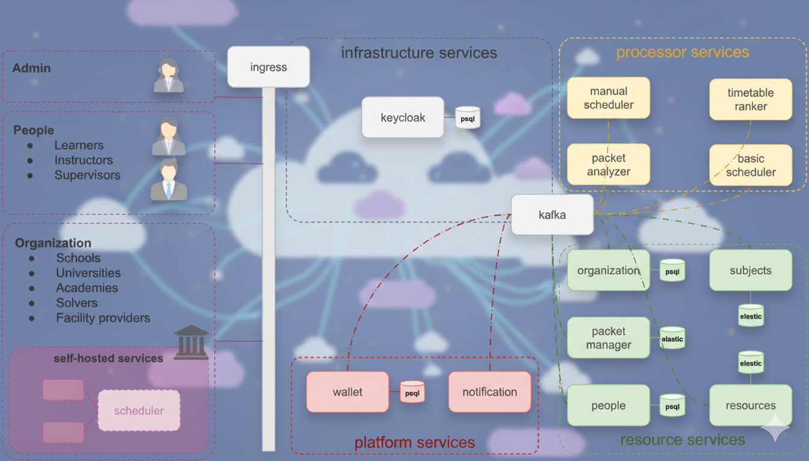

مقدمه
دستیار جدول زمانی توزیعشده (DiTA) یک پلتفرم غیرمتمرکز است که برای تحول در زمانبندی آموزشی طراحی شده است. DiTA با فاصله گرفتن از الگوریتمهای سنتی و متمرکز، به موسسات، مدرسان و یادگیرندگان این قدرت را میدهد تا به صورت مشترک جداول زمانی بهینهای بسازند.
به جای یک گلوگاه واحد، DiTA از شبکهای از سرویسهای حلکننده (Solver Services) مستقل استفاده میکند که برای حل مسائل زمانبندی تعریفشده توسط بستههای موسسه (Institution Packets) رقابت میکنند. این رویکرد مقیاسپذیری، عدالت و توانایی مدیریت محدودیتهای پیچیده دنیای واقعی را که سیستمهای متمرکز اغلب از دست میدهند، تضمین میکند.
برای بررسی عمیقتر نحوه کار DiTA، نمای کلی را ببینید.
نمای کلی
چالش
زمانبندی آموزشی ذاتاً پیچیده است. این امر شامل ایجاد تعادل بین نیازهای ذینفعان متعدد - موسسات، مدرسان، ناظران و یادگیرندگان - در برابر منابع محدودی مانند کلاسهای درس و آزمایشگاهها است. سیستمهای متمرکز سنتی اغلب با این پیچیدگی دست و پنجه نرم میکنند که منجر به برنامههای خشک میشود که در برآوردن ترجیحات فردی یا سازگاری با تغییرات ناتوان هستند.
راهکار DiTA
دستیار جدول زمانی توزیعشده (DiTA) این چالشها را از طریق عدم تمرکز حل میکند. این پلتفرم بازاری ایجاد میکند که در آن مسائل زمانبندی با حلکنندگان مستقل مطابقت داده میشوند.
مفاهیم کلیدی
- بستههای موسسه (Institution Packets): واحدهای داده ساختاریافته که در آن سازمانها شرکتکنندگان، دروس، محدودیتها و منابع خود را تعریف میکنند.
- سرویسهای حلکننده (Solver Services): میکروسرویسهای مستقل (انسانی یا خودکار) که راهحلهای جدول زمانی را پیشنهاد میدهند.
- بازار (Marketplace): اکوسیستمی که در آن بستهها منتشر میشوند و راهحلها مبادله میشوند.
ویژگیهای منحصر به فرد
۱. اکوسیستم باز
پلتفرم DiTA فقط برای مدارس نیست. این پلتفرمی است که هر کسی میتواند در آن ثبت نام کند و منابع را مدیریت کند.
- شرکتکنندگان: معلمان، دانشآموزان، ناظران.
- امکانات: مدارس، دانشگاهها، باشگاهها، آزمایشگاهها و موارد دیگر.
- اشتراکگذاری: کاربران میتوانند دسترسپذیری یا منابع خود را (مثلاً آزمایشگاهی که اسلاتهای خالی خود را اجاره میدهد) با کل شبکه به اشتراک بگذارند.
۲. مدیریت منابع ترکیبی
موسسات میتوانند منابع را به روشی منعطف و ترکیبی تعریف کنند:
- اختصاصی: استفاده از لیست خصوصی معلمان و اتاقهای خودتان.
- مشترک: درخواست منابع از استخر عمومی.
- شرطی: تعریف قوانینی مانند "اگر معلمان ریاضی داخلی ما کاملاً رزرو شدهاند، یک معلم ریاضی تایید شده از پلتفرم درخواست کن." این امر برای همه انواع منابع - مدرسان، کلاسهای درس یا حتی تجهیزات خاص - صدق میکند.
۳. مرکزی برای تحقیقات آکادمیک
زمانبندی آموزشی یک حوزه تحقیقاتی پویا است، با کنفرانسهای اختصاصی مانند PATAT (Practice and Theory of Automated Timetabling) و مسابقات بینالمللی (ITC). پلتفرم DiTA یک بستر آزمایشی دنیای واقعی کامل برای محققان فراهم میکند:
- دادههای واقعی: محققان میتوانند الگوریتمهای خود را روی محدودیتها و دادههای دنیای واقعی (در صورت نیاز ناشناسسازی شده) آزمایش کنند.
- بنچمارک: بازار به عنوان یک بنچمارک زنده عمل میکند که در آن الگوریتمهای جدید میتوانند با الگوریتمهای موجود رقابت کنند.
- پیادهسازی: دانشجویان و دانشگاهیان میتوانند حلکنندگان خود را به عنوان میکروسرویس منتشر کنند و کار خود را از مقالات نظری به کاربرد عملی منتقل کنند.
چگونه کار میکند (سفر کاربر)
- تعریف: یک موسسه نیازمندیهای خود (دروس، معلمان، اتاقها) را تعریف میکند و آنها را در یک بسته موسسه دستهبندی میکند.
- ارسال: بسته به شبکه DiTA ارسال میشود.
- کشف: سرویسهای حلکننده مستقل بسته را کشف و پیچیدگی آن را تحلیل میکنند.
- حل کردن: حلکنندگان جداول زمانی پیشنهادی را با بهینهسازی برای محدودیتها و ترجیحات تولید میکنند.
- ارزیابی: سیستم پیشنهادات را بر اساس کیفیت، عدالت و رعایت قوانین امتیازدهی میکند.
- انتخاب: موسسه بهترین راهحل را انتخاب میکند و حلکننده برنده پاداش میگیرد.
این فرآیند امکان بهبود تکراری را فراهم میکند، جایی که برنامهها میتوانند در طول زمان اصلاح شوند تا به بهترین نتیجه ممکن برای همه افراد درگیر برسند.

طراحی
طراحی دستیار جدول زمانی توزیعشده (DiTA) بر قابلیت توسعه، عدالت و ارزیابی واکنشی (Reactive) تمرکز دارد. این طراحی مکانیسمهای انتزاعی را فراهم میکند که بازار توصیفشده در نمای کلی را فعال میسازد.

مکانیسمهای اصلی
۱. بازار (The Marketplace)
بازار لایه جداسازی بین موسسات (تقاضا) و حلکنندگان (عرضه) است. این لایه تضمین میکند که:
- کشف: حلکنندگان میتوانند مسائلی را که با تواناییهایشان مطابقت دارد پیدا کنند.
- شفافیت: تمام تراکنشها و ارزیابیها قابل تأیید هستند.
- رقابت: چندین حلکننده میتوانند برای حل یک مسئله تلاش کنند که منجر به افزایش کیفیت راهحل میشود.
۲. ارزیابی و امتیازدهی واکنشی
پلتفرم DiTA از یک مدل امتیازدهی واکنشی (Reactive) استفاده میکند. امتیازات راهحلها ثابت نیستند؛ آنها بر اساس تغییر وضعیت منابع تنظیم میشوند.
- امتیازدهی پویا: اگر یک منبع (مثلاً یک آزمایشگاه خاص) به صورت سراسری رزرو بیش از حد شود، امتیاز راهحلهایی که به آن وابسته هستند ممکن است در لحظه کاهش یابد.
- عدالت: سیستم تضادها را جریمه میکند و استفاده کارآمد از منابع را به صورت متناسب پاداش میدهد.
۳. قابلیت توسعه
پلتفرم به گونهای طراحی شده است که بدون شکستن قراردادهای موجود تکامل یابد:
- مدلهای پاداش: روشهای جدید برای تشویق حلکنندگان (مانند توکنها، شهرت) قابل اتصال هستند.
- گیمیفیکیشن: لیدربردها و چالشها میتوانند به لایه حلکننده اضافه شوند.
- اعتبارسنجهای قابل اتصال: موسسات میتوانند منطق اعتبارسنجی سفارشی را برای محدودیتهای خاص خود اضافه کنند.
۴. پردازش منعطف و حریم خصوصی
سیستم از مدلهای پردازش مختلف برای برآوردن نیازهای متفاوت حریم خصوصی و امنیتی پشتیبانی میکند:
- پردازش میزبانیشده توسط خود (Self-Hosted): موسسات میتوانند سرویسهای حلکننده خود را اجرا کنند تا دادهها کاملاً در زیرساخت خودشان باقی بماند.
- پردازش شرطی: درخواستها میتوانند به حلکنندگان خاصی که معیارهای خاصی را برآورده میکنند (مثلاً "فقط شرکای مورد اعتماد") هدایت شوند.
- پردازش ناشناس: دادهها میتوانند قبل از رسیدن به حلکنندگان عمومی از یک لایه ناشناسسازی عبور کنند. نتایج پس از بازگشت به صورت شفاف از حالت ناشناس خارج میشوند و به جامعه اجازه میدهند بدون دیدن دادههای هویتی حساس، مسئله را حل کنند.
اصول طراحی
| اصل | توضیحات |
|---|---|
| عدم تمرکز | منطق توزیع شده است؛ هیچ زمانبند مرکزی واحدی بر نتیجه کنترل ندارد. |
| شفافیت | قوانین ارزیابی و پاداشها برای همه شرکتکنندگان روشن است. |
| واکنشگرا (Reactivity) | سیستم با تغییرات وضعیت در لحظه سازگار میشود. |
| مقیاسپذیری | افزودن حلکنندگان بیشتر، ظرفیت حل مسئله سیستم را به صورت خطی افزایش میدهد. |
بسته موسسه (Institution Packet)
بسته موسسه ساختار کامل و دادهها را برای یک موسسه در سیستم DiTA تعریف میکند. این بسته به عنوان پیکربندی ریشهای عمل میکند که تمام جنبههای زمانبندی و مدیریت منابع موسسه، از جمله در دسترس بودنها، امکانات، یادگیرندگان، مدرسان و موارد دیگر را در بر میگیرد.
اجزا
بسته موسسه از چندین بخش تشکیل شده است که هر کدام مسئول یک دامنه خاص از دادههای موسسه هستند:
- دسترسیها: بازههای زمانی و وضعیت در دسترس بودن برای زمانبندی را تعریف میکند (مانند تاریخهای ترم، برنامههای روزانه، تعطیلات).
- امکانات: فضاهای فیزیکی مانند کلاسهای درس، آزمایشگاهها و سالنهای کنفرانس.
- یادگیرندگان: افرادی که در دورهها ثبت نام کردهاند.
- مدرسان: افرادی که مسئول تدریس دورهها هستند.
- ناظران: افرادی که امکانات یا منابع دیگر را مدیریت میکنند.
- منابع: مواد آموزشی مانند کتابها و تجهیزات.
- موضوعات: عناوین آموزشی استاندارد (مانند "فیزیک ۱").
- دورهها: ارائههای زمانبندی شده موضوعات.
- واحدها: واحدهای سازمانی مانند دپارتمانها یا دانشکدهها.
مثال
در زیر یک مثال از پیکربندی کامل بسته موسسه با فرمت YAML آورده شده است.
apiVersion: apps/v1
kind: InstitutionPacket
name: Brisbane Central Primary School
address:
availabilities: # دسترسیها بازههای زمانی خاص را همراه با وضعیت برای اهداف زمانبندی تعریف میکنند.
- action: Add # افزودن (Add)، حذف (Remove)
add-type: WeeklyPeriod # دوره روزانه، هفتگی، ماهانه، سالانه، بلوکها، بلوک
first-day-of-week: Monday # یکشنبه تا شنبه (نامهای انگلیسی)
time-cells:
- action: Add # افزودن، حذف
add-type: DailyPeriod
rules: []
time-cells:
# جلسه ۱: ۰۹:۰۰ - ۱۰:۴۰
- action: Add # افزودن، حذف
add-type: Block
start: 09:00
end: 10:40
status: Available # موجود، ناموجود، ترجیحی، نامطلوب
rules: []
# استراحت ۱: ۱۰:۴۰ - ۱۱:۲۵ (مستثنی شده)
# جلسه ۲: ۱۱:۳۰ - ۱۳:۰۰
- action: Add # افزودن، حذف
add-type: Block
start: 11:30
end: 13:00
status: Available # موجود، ناموجود، ترجیحی، نامطلوب
rules: []
# استراحت ۲: ۱۳:۰۰ - ۱۳:۳۰ (مستثنی شده)
# جلسه ۳: ۱۳:۳۰ - ۱۵:۰۰
- action: Add # افزودن، حذف
add-type: Block
start: 13:30
end: 15:00
status: Available # موجود، ناموجود، ترجیحی، نامطلوب
rules: []
start: Monday
end: Friday
start: 2025-01-28T00:00:00+10:00
end: 2025-12-12T23:59:59+10:00
- action: Remove # افزودن، حذف
remove-type: Holidays
country: "au-qld"
start: 2025-01-28T00:00:00+10:00
end: 2025-12-12T23:59:59+10:00
facilities: # امکانات نشاندهنده فضاهای فیزیکی مانند کلاسها، آزمایشگاهها، سالنهای ورزشی یا کنفرانس هستند که قابل زمانبندی میباشند.
learners: # یادگیرندگان افرادی هستند که برای دریافت آموزش در دورهها ثبتنام میکنند.
instructors: # مدرسان افرادی هستند که مسئول آموزش و راهنمایی یادگیرندگان در یک یا چند دوره هستند.
supervisors: # افرادی که برای نظارت یا مدیریت امکانات تعیین شدهاند.
resources: # منابع مواد آموزشی مانند کتابها، ویدئوها یا اسنادی هستند که به موضوعات مرتبط هستند.
subjects: # موضوعات عناوین آموزشی استاندارد مانند "فیزیک ۲" را تعریف میکنند که میتوانند در چندین دوره تدریس شوند.
courses: # دورهها ارائههای زمانبندی شده یک موضوع هستند که معمولاً به یک مدرس و آکادمی خاص مرتبط میباشند.
units: # واحدهای سازمانی مانند مدارس، دپارتمانها یا مراکز آموزشی که هر کدام زمانبندی و منابع خاص خود را دارند.
- name: Primary Years
address:
availabilities:
facilities:
learners:
instructors:
supervisors:
resources:
subjects:
courses:
دسترسیها (Availabilities)
دسترسیها بازههای زمانی خاص را همراه با وضعیت برای اهداف زمانبندی تعریف میکنند. این سیستم امکان ایجاد قوانین زمانبندی پیچیده شامل الگوهای تکرارشونده، محدودههای زمانی خاص و مدیریت استثناها (مانند تعطیلات) را فراهم میکند.
ساختار
یک ورودی دسترسی شامل ساختاری سلسلهمراتبی از تعاریف زمانی است.
فیلدهای سطح بالا
- action: عملیاتی که باید انجام شود.
Add: افزودن دسترسی برای دوره مشخص شده.Remove: حذف دسترسی (مثلاً برای تعطیلات یا استثناها).
- add-type (برای عمل
Add): دامنه افزودن را تعریف میکند.WeeklyPeriod: الگوی تکرارشونده هفتگی.DailyPeriod: الگوی تکرارشونده روزانه.MonthlyPeriod: الگوی تکرارشونده ماهانه.YearlyPeriod: الگوی تکرارشونده سالانه.Blocks: مجموعهای از بلوکهای زمانی خاص.Block: یک بلوک زمانی خاص تکی.
- remove-type (برای عمل
Remove): دامنه حذف را تعریف میکند.Holidays: حذف زمان بر اساس تعطیلات رسمی برای یک منطقه خاص.
- start: تاریخ/زمان شروع دوره دسترسی (فرمت ISO 8601).
- end: تاریخ/زمان پایان دوره دسترسی (فرمت ISO 8601).
- country (برای
Holidays): کد کشور (مثلاً "ir", "au-qld") برای دریافت تعطیلات رسمی.
سلولهای زمانی (Time Cells)
سلولهای زمانی واحدهای تودرتویی هستند که دقت زمانبندی را تعریف میکنند.
- action:
AddیاRemove. - add-type: نوع سلول زمانی (مثلاً
DailyPeriod,Block). - start: محدودیت شروع برای سلول (مثلاً
08:00,Monday). - end: محدودیت پایان برای سلول.
- status: وضعیت در دسترس بودن برای این جایگاه.
Available: زمان آزاد است و میتواند رزرو شود.Unavailable: زمان قابل رزرو نیست.Preferred: زمان برای رزرو ترجیح داده میشود.Undesired: زمان ترجیح داده نمیشود اما در صورت لزوم قابل استفاده است.
- rules: لیستی از محدودیتها یا رفتارهای خاص (اختیاری).
مثالها
برنامه مدرسه راهنمایی بریزبن
این مثال یک برنامه مدرسه برای مدرسه راهنمایی در بریزبن، استرالیا را نشان میدهد.
- روزها: دوشنبه تا جمعه.
- ساعات: ۰۸:۳۰ تا ۱۵:۱۰.
- ساختار: ۶ زنگ با ۲ وقت استراحت (چای صبحگاهی و ناهار).
- ترم: ترم ۱ (۲۸ ژانویه) تا ترم ۴ (۱۲ دسامبر) برای سال ۲۰۲۵.
- تعطیلات: تعطیلات رسمی کوئینزلند مستثنی شدهاند.
availabilities:
# تعریف برنامه اصلی مدرسه برای سال ۲۰۲۵
- action: Add
add-type: WeeklyPeriod
first-day-of-week: Monday
start: 2025-01-28T00:00:00+10:00 # شروع ترم ۱
end: 2025-12-12T23:59:59+10:00 # پایان ترم ۴
time-cells:
- action: Add
add-type: DailyPeriod
start: Monday
end: Friday
time-cells:
# زنگ ۱: ۰۸:۳۰ - ۰۹:۲۰
- action: Add
add-type: Block
start: 08:30
end: 09:20
status: Available
rules: []
# زنگ ۲: ۰۹:۲۰ - ۱۰:۱۰
- action: Add
add-type: Block
start: 09:20
end: 10:10
status: Available
rules: []
# استراحت ۱ (چای صبحگاهی): ۱۰:۱۰ - ۱۰:۴۰ (مستثنی شده)
# زنگ ۳: ۱۰:۴۰ - ۱۱:۳۰
- action: Add
add-type: Block
start: 10:40
end: 11:30
status: Available
rules: []
# زنگ ۴: ۱۱:۳۰ - ۱۲:۲۰
- action: Add
add-type: Block
start: 11:30
end: 12:20
status: Available
rules: []
# جمعبندی: ۱۲:۲۰ - ۱۳:۰۰
- action: Add
add-type: Block
start: 12:20
end: 13:00
status: Available
rules: []
# استراحت ۲ (ناهار): ۱۳:۰۰ - ۱۳:۳۰ (مستثنی شده)
# زنگ ۵: ۱۳:۳۰ - ۱۴:۲۰
- action: Add
add-type: Block
start: 13:30
end: 14:20
status: Available
rules: []
# زنگ ۶: ۱۴:۲۰ - ۱۵:۱۰
- action: Add
add-type: Block
start: 14:20
end: 15:10
status: Available
rules: []
# حذف تعطیلات رسمی کوئینزلند
- action: Remove
remove-type: Holidays
country: "au-qld"
start: 2025-01-28T00:00:00+10:00
end: 2025-12-12T23:59:59+10:00
امکانات
امکانات به فضاهای فیزیکی مانند کلاسها، آزمایشگاهها، سالنهای ورزشی یا سالنهای همایش اشاره دارند که میتوان آنها را برای استفاده زمانبندی کرد.
فراگیران
یادگیرندگان افرادی هستند که برای دریافت آموزش یا مهارتآموزی در دورهها ثبتنام میکنند.
مدرسان
مدرسان افرادی هستند که مسئولیت آموزش و هدایت فراگیران را در یک یا چند دوره بر عهده دارند.
ناظران
افرادی که برای نظارت یا مدیریت امکانات تعیین شدهاند.
منابع
منابع مواد آموزشی مانند کتابها، ویدئوها یا اسنادی هستند که به موضوعات مرتبط هستند.
موضوعات
موضوعات، سرفصلهای استاندارد آموزشی مانند «فیزیک ۲» هستند که میتوان آنها را در چندین دوره تدریس کرد.
دورهها
دورهها ارائههای زمانبندیشدهی یک موضوع آموزشی هستند که معمولاً به یک مدرس و یک مؤسسهی آموزشی مشخص متصل میشوند.
واحدها
واحدها ساختارهای سازمانی مانند مدارس، دپارتمانها یا مراکز آموزشی هستند که هرکدام برنامهریزی و منابع مخصوص به خود را دارند.
معماری
پلتفرم DiTA به عنوان مجموعهای از میکروسرویسهای بومی کوبرنتیز (Kubernetes-native) ساخته شده است. این پلتفرم جداسازی واضحی بین مدیریت داده (منابع)، منطق (پردازشگرها) و ابزارهای پلتفرم اعمال میکند.
انعطافپذیری در استقرار:
- میزبانی کامل شخصی (Self-Hosting): کل پلتفرم میتواند برای کنترل کامل به صورت محلی (On-Premise) مستقر شود.
- ترکیبی (Hybrid): استفاده از ابر عمومی برای برخی سرویسها (مانند بازار) در حالی که سرویسهای منابع حساس به صورت شخصی میزبانی میشوند.
- سطح سرویس: سرویسهای فردی میتوانند به طور مستقل جایگزین یا میزبانی شوند.
تکنولوژیهای کلیدی:
- ارتباطات: Kafka (گذرگاه رویداد)، gRPC/REST.
- وضعیت (State): PostgreSQL (رابطهای)، Elasticsearch (جستجو/اینکس)، Redis (کش/موقتی).
- هویت: Keycloak.

گروههای سرویس
۱. سرویسهای منابع (حقیقت)
این سرویسها دادههای دامنه اصلی را مدیریت میکنند. آنها منبع حقیقت سیستم هستند.
packet-manager: بستههای ارسالی و چرخه عمر آنها را مدیریت میکند. برای جستجوی با کارایی بالا از Elasticsearch استفاده میکند.people: پروفایلها (مدرسان، دانشجویان) و در دسترس بودن را مدیریت میکند.organization: ابردادههای مدرسه/دانشگاه را مدیریت میکند.resources: داراییهای فیزیکی (اتاقها، تجهیزات) را مدیریت میکند.subjects: برنامه درسی و تعاریف موضوعات را مدیریت میکند.
۲. سرویسهای پردازشگر (کارگران)
این سرویسها رویدادها را مصرف کرده و کارهای سنگین را انجام میدهند.
basic-scheduler: یک حلکننده خودکار که جداول زمانی را تولید میکند. برای صفهای کار از Redis استفاده میکند.manual-scheduler: از ویرایش توسط انسان (Human-in-the-loop) پشتیبانی میکند.packet-analyzer: ویژگیها (پیچیدگی، محدودیتها) را از بستهها استخراج میکند تا حلکنندگان را راهنمایی کند.timetable-ranker: پردازشگر جریانی که راهحلهای ورودی را امتیازدهی میکند.
۳. پلتفرم و زیرساخت
wallet: اعتبارات و تراکنشها را مدیریت میکند (انحصاری ابر).notification: هشدارها و پیامها را مدیریت میکند.kafka: سیستم عصبی مرکزی. همه سرویسها رویدادهای دامنه را در اینجا منتشر/مشترک میشوند.ingress: مسیریابی و متعادلسازی بار را مدیریت میکند.
جریان تعامل فنی
سیستم بر یک معماری رویداد-محور (Event-Driven) متکی است:
۱. ورود داده (Ingestion): فراخوانیهای API به سرویسهای منابع، رویدادهایی (مانند packet.created) را به Kafka ارسال میکنند.
۲. پردازش: سرویسهای پردازشگر (مانند basic-scheduler) در این تاپیکها مشترک میشوند.
۳. انتشار نتایج: پردازشگرها نتایج (مانند candidate.created) را دوباره به Kafka منتشر میکنند.
۴. تجمع (Aggregation): سرویسهای تحلیلی (timetable-ranker) جریانهای نتایج را مصرف میکنند تا امتیازات را به صورت بلادرنگ بهروزرسانی کنند.
توسعه
این بخش شامل تصمیمات فنی و پیادهسازی سرویسها است.
راهنمای فنی توسعه در آدرس زیر در دسترس است: eg.dita.hasankarimi.ir
مجوز
پروژه دستیار جدول زمانی توزیعشده (DiTA)، شامل کد منبع، طراحی، مستندات و چارچوب مفهومی آن، دارایی معنوی انحصاری مالک آن است.
هیچ بخشی از این پروژه - شامل اما نه محدود به ایدهها، الگوریتمها، طراحی معماری یا جزئیات پیادهسازی - نباید بدون اجازه کتبی قبلی از مالک، کپی، بازتولید، اصلاح، توزیع یا به هر شکلی، اعم از تجاری یا غیرتجاری، استفاده شود.
استفاده غیرمجاز، تکثیر یا توزیع هر یک از اجزای این پروژه نقض حقوق مالکیت معنوی تلقی شده و ممکن است منجر به اقدام قانونی شود.
© 2025 پروژه DiTA. تمامی حقوق محفوظ است.